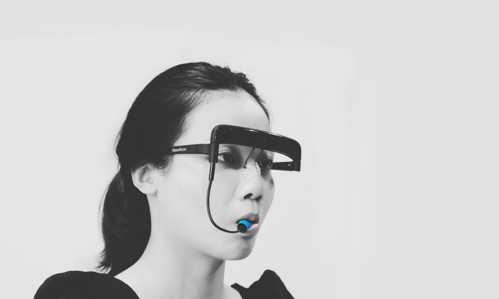
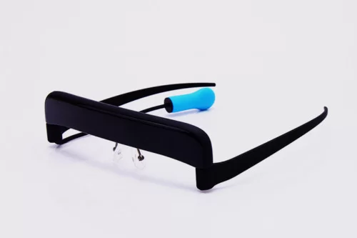

Beneficios que aporta
- Acceso a la tecnología para personas con movilidad limitada, facilitando la interacción digital sin necesidad de usar las manos.
- Control preciso mediante movimientos de cabeza y sensores giroscópicos.
- Diseño ergonómico que se asemeja a unas gafas, permitiendo un uso cómodo y prolongado.
- Compatibilidad con dispositivos modernos a través de Bluetooth, funcionando tanto con computadoras como con smartphones.
¿Qué es el GlassOuse?

El GlassOuse es un dispositivo innovador que incorpora sensores avanzados, como acelerómetros y giroscopios, los cuales permiten a los usuarios controlar diversos dispositivos electrónicos mediante movimientos suaves de la cabeza. Estos sensores captan cambios de posición y orientación, transformando cada movimiento en comandos digitales precisos y fáciles de interpretar. Esta tecnología, que ya se había empleado en aplicaciones de rastreo de movimiento para videojuegos o cámaras, ha sido específicamente adaptada para personas con discapacidades motoras, proporcionando una herramienta accesible para la comunicación y la interacción en el mundo digital. Permite controlar dispositivos electrónicos como computadoras y teléfonos móviles mediante movimientos de cabeza y un interruptor de mordida.El GlassOuse está diseñado con sensores avanzados, como acelerómetros y giroscopios, que permiten a los usuarios controlar dispositivos electrónicos con movimientos mínimos . Es una evolución de la tecnología de rastreo de movimiento aplicada en otros campos, pero adaptada para personas con discapacidades motoras.

Compatibilidad con varios dispositivos
El GlassOuse se destaca por su versatilidad, ya que es compatible con una variedad de dispositivos y sistemas operativos. Los usuarios pueden utilizarlo con computadoras de escritorio o portátiles que funcionen con Windows, macOS o Linux, y también con tablets y smartphones que operen con Android o iOS. Además, se conecta con televisores inteligentes y otros dispositivos compatibles con Bluetooth, facilitando su integración en la vida diaria de los usuarios. Gracias a esta compatibilidad, el GlassOuse ofrece una experiencia continua y sin interrupciones, permitiendo a las personas interactuar con sus dispositivos favoritos y reduciendo las barreras físicas para el acceso a la tecnología. ¿Entonces con que dispositivos es compatible?:
- Computadoras (Windows, macOS, Linux)
- Tablets y smartphones (Android, iOS)
- Televisores inteligentes y otros dispositivos Bluetooth.

Sustitución de dispositivos tradicionales
El GlassOuse representa una mejora significativa en comparación con dispositivos de asistencia más antiguos, que a menudo son menos eficientes y menos ergonómicos. A diferencia de los ratones adaptados que requieren la utilización de manos o pies, el GlassOuse permite el control sin esfuerzo físico adicional. Supera también a sistemas de control por soplido y pulsadores, los cuales pueden resultar incómodos y de respuesta lenta. Trackballs y touchpads adaptados tampoco igualan el nivel de precisión y comodidad que ofrece el GlassOuse. De esta manera, el dispositivo sustituye y mejora los mecanismos de control tradicionales, brindando una alternativa de última generación.
El GlassOuse sustituye a tecnologías más antiguas y menos eficientes, como:
- Ratones adaptados, que requieren uso de las manos o el pie.
- Sistemas de control por soplido o pulsadores, que suelen ser más lentos y engorrosos para algunos usuarios.
- Trackballs y touchpads adaptados, que no ofrecen el nivel de precisión y comodidad que proporciona el GlassOuse.
Proximos desarrollos
La empresa GlassOuse planea seguir mejorando el dispositivo mediante actualizaciones de hardware y software. Algunos rumores mencionan que en el futuro se podrían integrar tecnologías como control por voz o incluso sistemas basados en inteligencia artificial que mejoren la precisión del control.
Visítanos en nuestra oficina
A continuación, puedes ver nuestra ubicación en el mapa: